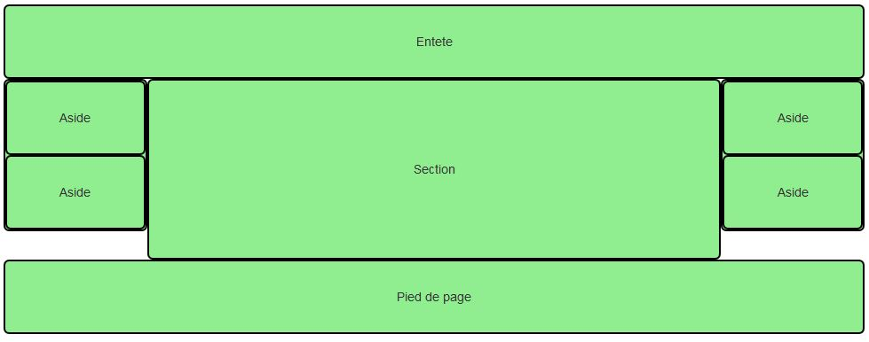
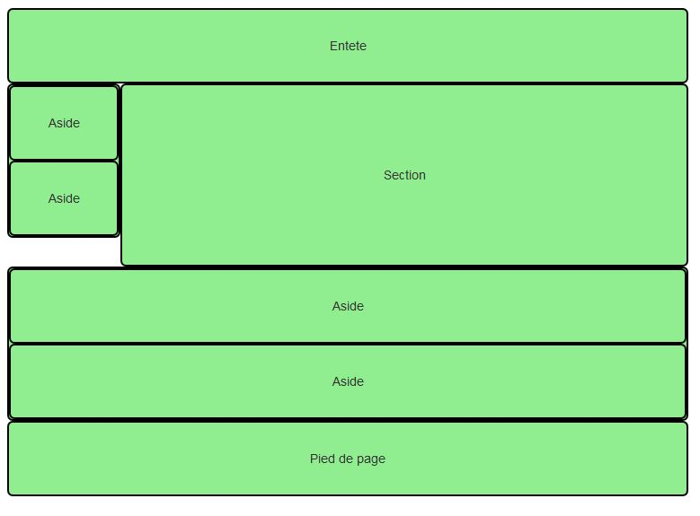
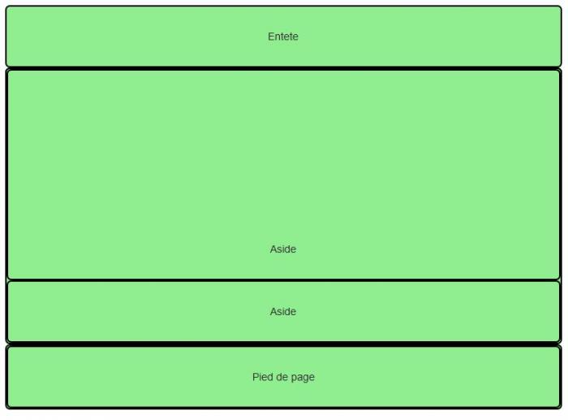
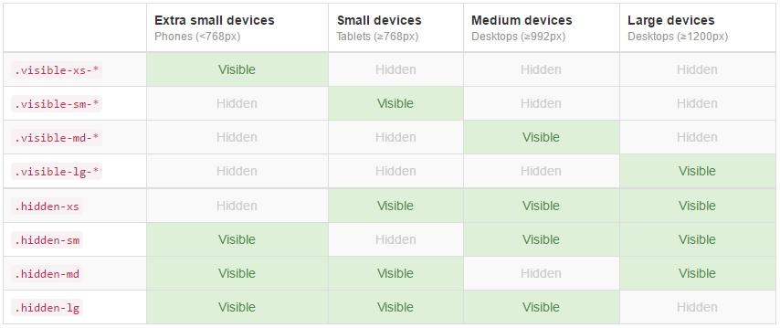
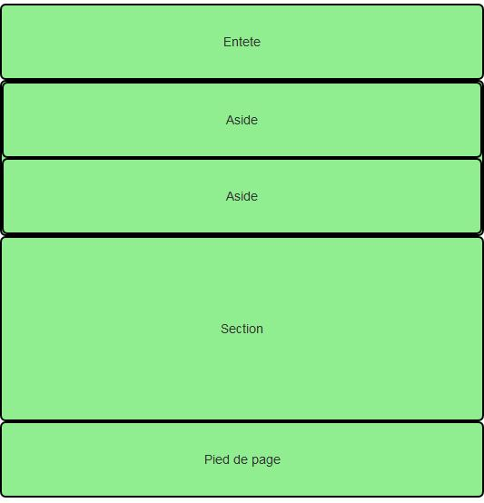
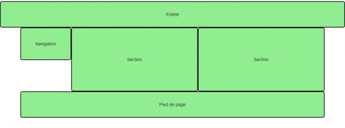

Je vais maintenant utiliser ce que j'ai vu dans les chapitres précédents pour construire une page pratique.
1.) Combinaison de classes "col-*"
J'ai vu des mises en page utilisant sélectivement les classes pour les colonnes pour les différents formats de supports. Je vais à présent envisager leur
combinaison pour gérer certains cas. Dans la page à réaliser, je veux avoir des petites photos côte à côte. Supposons que je parte de cette structure pour cette
partie de la page :
Réf Structure de base
Le rendu sur grand écran est parfait avec 6 photos sur la largeur. Mais ça se gâte quand je rétrécis la fenêtre, puisque je sais qu'en dessous de 1200 pixels les
éléments s'empilent. Du coup je me retrouve avec une image sur la largeur, et comme je les ai prévues en basse résolution, elle pixellise.
L'idéal serait d'avoir :
- Sur moyen et grand écran: 6 images sur la largeur
- Sur tablette : 4 images sur la largeur
- Sur smartphone: 3 images sur la largeur
Comment réaliser cela ? Tout simplement en combinant les classes col-* :
Réf Structure de base
J'ai donc facilement obtenu une adaptation de la présentation de mes photos en fonction du support utilisé pour les visualiser.
2.) Page d'exemple
Construisons maintenant une page complète qui intègre la partie que je viens de traiter :
Réf Exemple de page
a./ La classe page-header
Cette classe fixe quelques valeurs (cf header de l'exemple précédent:
.page-header {
padding-bottom: 9px;
margin: 40px 0 20px;
border-bottom: 1px solid #eee;
}
b./ Quelques mises en valeur
J'ai placé du texte abrégé entre les balises < abbr>, et lors du survol de ce texte, alor le contenu de l'attribut title apparaît à côté.
c./ Une citation
Un des paragraphes comportent une citation (< blocquote>) et le mot Wikipédia décalé à droite :
< small class="pull-right">Wikipedia< /small>< br>
Le résultat est sobre et élégant.
La référence inférieure "Wikipédia" a été renvoyée à droite avec la classe pull-right qui se contente de rendre flottant à droite :
.pull-right {
float: right !important;
}
d./ Une adresse
Dans la partie inférieure gauche figure une adresse. J'ai simplement utilisé la balise < address>.
< address>
< p>Vous pouvez me contacter à cette adresse :< /p>
< p> <strong>Tigrou Alfred< /strong>< br>
Allée des fauves< br>
28645 Félins-sur-Loire< br>
< /address>
e./ Juste un peu de style ajouté
Pour donner plus d'harmonie à cette page, j'ai dû ajouter une marge basse de 20px à tous les col et j'ai obligé les images à occuper tout
l'espace disponible :
[class*="col"] { margin-bottom: 20px; }
img { width: 100%; }
C'est le seul élément de style ajouté à cette page.
II./ Cas pratiques et classes "responsive"
1.) Exercice 1
Le but est d'obtenir une mise en page pour grand écran identique à celle de la figure suivante :

Résultat à obtenir
Réf Exercice 1
Maintenant, la question à se poser est: comment va réagir cette structure quand on va réduire la fenêtre ? Comme j'ai mis des classes col-lg-*,
tout va s'empiler sous 1200 pixels. Si cet effet me convient, c'est parfait. Mais supposons que, sur tablette je veuille une structure similaire à la figure
suivante :

Affichage à obtenir sur tablette
Réf Exercice 1 bis
J'ai remplacé les classes col-lg-* par des classes col-md-* pour avoir un comportement de base pour écrans moyens et grands. J'ai
ensuite introduit des classes col-sm-* pour avoir le comportement désiré sur tablette. En revanche, la ligne 31 mérite quelques commentaires
particuliers. Pour le média tablette, j'ai des éléments flottants qui se succèdent avec des comportements qui ne sont pas forcément ceux que l'on souhaite. La
figure suivante montre le résultat sans cette ligne de code :

Résultat sans la classe "clearfix"
Que fait cette classe clearfix ? Elle réinitialise les éléments flottants qui suivent pour les ramener dans le flux normal, et éviter qu'ils
viennent recouvrir les éléments précédents. J'ai donc écrit cette ligne de code juste après les balise < section>< /section> :
< div class="clearfix visible-sm-block">< /div>
Remarque : apparemment, cette ligne de code n'est nécessaire que lorsqu'il y a d'autres éléments (possédant la même classe supérieure que celle de l'élément
précédant) qui suivent directement l'élément qui a au moins deux classes de positionnement différentes (ex col-lg-* col-mg-*). En l'occurence, le
second bloc col-md-2 avec les deux asides se situe juste après le bloc section, dans le même row.
Je vais voir maintenant la classe visible-sm...
a./ Les classes "responsives"
Pour poursuivre l'exercice précédent, il faut d'abord évoquer quelques classes très utiles qui vont me permettre non plus de positionner différemment les
éléments, mais carrément de les faire disparaître ou appraître. Voici le tableau très bien fait tiré de la documentation, visible à la figure suivante :

Les classes "responsive"
Les classes de visibilité se déclinent en trois sortes selon le type de visualisation :
Les classes de visibilité
J'ai déjà utilisé une de ces classes. Continuons à en utiliser pour poursuivre mon exercice en supprimant 2 asides pour les smartphones :

Affichage désiré sur smartphone
Il suffit de changer une ligne :
Réf Exercice 1 : bis bis
2.) Exercice 2
Maintenant, je vais obtenir le résultat visible à la figure suivante :

Résultat à obtenir
Donc une entête qui prend toute la largeur de l'écran, une navigation à gauche, deux sections accolées et un pied de page, le tout pour grand écran. Voici
une solution:
Réf Exercice 2
Et pour faire en sorte que les deux section restent accolées sur les écrans moyens :
Réf Exercice 2_a
Pour finir: je me dis que mon application irait bien aussi sur tablette, l'empilement des éléments me convient, mais j'aimerais avoir une en-tête différente.
Après une nouvelle réflexion, j'en veux aussi une différente sur smartphone. Avec les classes "responsive" vues précédemment, c'est facile à réaliser:
Réf Exercice 2_b
Remarque : Il y a deux façons d'écrire le header dans ce cas de figure, soit juste avec la classe col-lg-12 pour chacun des div contenant le
texte de l'entête et des classes visible-*-block qui changent. Soit, en plus des classes visible-*-block, avec des classes
col-*-12 pour chacune des dimensions à la place de la classe col-lg-12 (dans les 3 div sur 4), mais alors il faudra
ajouter à la suite de la balise header un div ayant la classe clearfix pour que l'entête soit affiché correctement sur tous
les supports.
En résumé
Il est possible avec la grille de régler très finement le rendu des pages selon les supports de visualisation.
La plupart des éléments typographiques du HTML trouvent automatiquement une mise en forme esthétique avec Bootstrap.
On a vu sur des exemples pratiques qu'il est facile de faire des mises en page même complexes sans trop d'effort